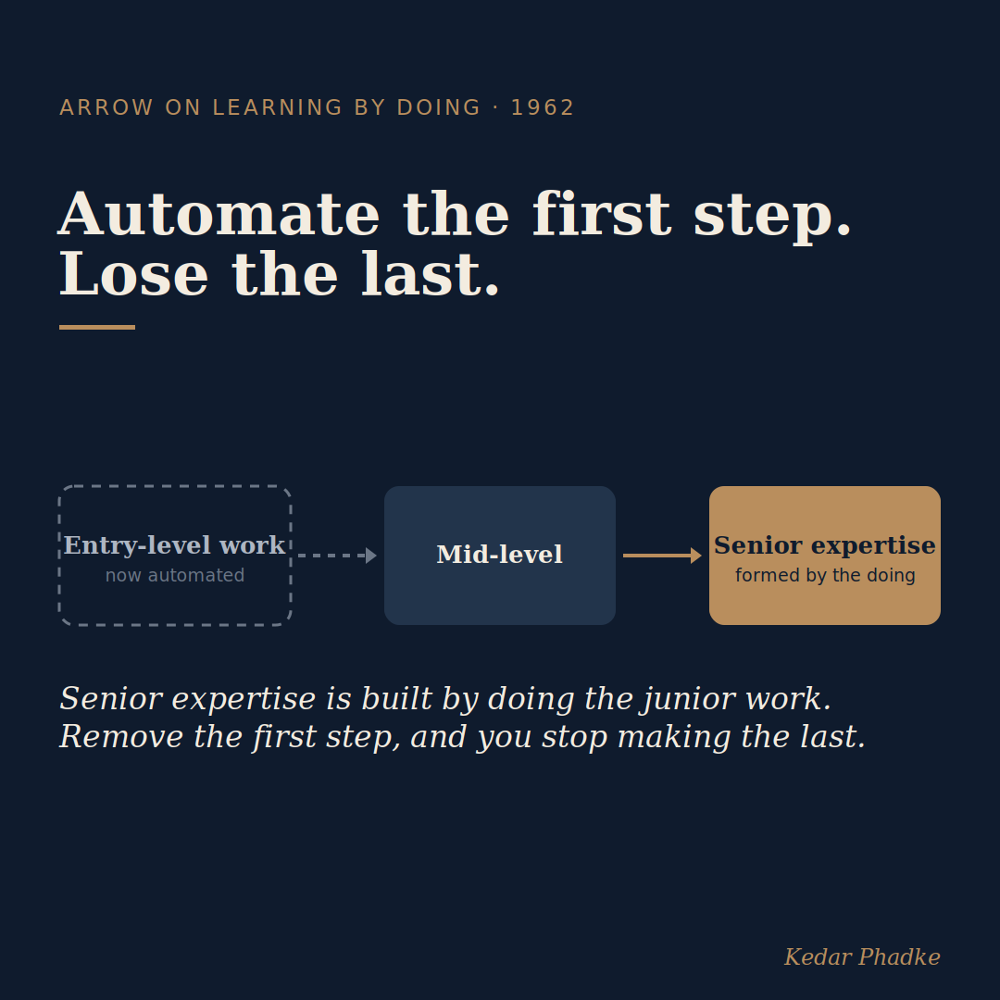

The Knowledge That Does Not Appear in Any Quarterly Report
A recent Stanford study is back in the news this week, and it is worth looking beyond the headlines. Since late 2022, employment for workers aged 22 to 25 in the most AI-exposed jobs has fallen by about 13 per cent compared with those in less AI-exposed roles. This data comes from ADP payroll records for millions of workers, analysed by economist Erik Brynjolfsson at Stanford's Digital Economy Lab. This claim first appeared a year ago and has held up under close review. Brynjolfsson excluded the entire tech sector, considered remote work, and checked whether interest rates explained the trend. Each time, the pattern remained. In fact, it has become even clearer.
Most headlines say that AI is taking entry-level jobs. While this is true, it misses a larger issue.
The Knowledge That Does Not Appear in Any Quarterly Report
In 1962, Kenneth Arrow published a paper that changed how economists think about growth. He argued that much of an economy's productivity gain comes not only from formal education or investment, but from workers learning by doing and gaining hands-on experience through repeated tasks. This type of expertise benefits the whole economy, not just individual companies.
Entry-level jobs are not simply tasks waiting to be automated. According to Arrow, these roles are where future experts are developed. For example, an analyst who spends years cleaning data and building models does not just improve technical skills; they also become better at judging AI results, leading research, and making decisions. The practical work is the real training. Arrow's model shows that you cannot replace this experience simply by observing others.
There is an interesting detail in the Stanford data. Older workers are keeping their jobs because they have valuable knowledge that AI models cannot replicate. This is the sort of experience you only gain through real work, not from manuals. Entry-level jobs are where this knowledge is built. If we eliminate these starting roles, we stop creating the skills that currently protect senior workers from being replaced by technology.

What the Efficiency Gain Does Not Include
When a company cuts entry-level jobs that are exposed to AI, it is making a logical choice for itself. Junior workers are less productive in relation to the cost of managing them and the availability of AI tools, so the company saves money.
However, what does not appear on a company's balance sheet is the long-term value those junior roles would have created, not just for the company, but for the whole industry and the economy. Arrow's model shows that gaining experience benefits everyone. When we automate these jobs, we lose that benefit. The economy pays a hidden cost, even as companies see short-term savings.
The economy pays a hidden cost, even as companies see short-term savings.
The Stanford figure is often reported loosely, so it helps to be exact. The 13 per cent is a relative drop for this age group in the most AI-exposed jobs, compared with their less-exposed peers. It is not an absolute job-loss rate. Greater drops, close to 20 per cent, occur in certain roles such as young software developers. This difference matters for anyone making policy decisions. The trend has remained consistent in later studies and matches the August 2026 Panorama Report, which found that AI's impact on jobs comes mostly from slower hiring, not large redundancies.
What This Means for Those Who Develop Talent
For those working in education and talent development, this changes the question we must ask. Upskilling programmes assume that learners have opportunities to gain real, meaningful experience. If entry-level opportunities shrink, training alone cannot compensate for the loss of practical learning. We should focus on providing genuine experience, not just sharing information.
Business leaders should keep this in mind when planning for the next few years. If a company removes junior analytical roles now, it may struggle to fill senior positions in five to seven years, because the next generation never had the opportunity to build their skills. This cost will not be visible in financial statements, but it will appear as a talent shortage in future.
There is one rough way to watch for it before it arrives. Track whether your firm still fills senior roles from within, or whether it increasingly buys that seniority from outside. Rising external senior hiring is the pipeline failing in slow motion, and it shows up long before the shortage does.
If you are a student or just beginning your career, Arrow's logic offers practical advice. When AI assists you in your work, you build skills. However, if AI replaces your work entirely, it is a different situation. Seek roles where you still gain practical experience.
The Stanford data sends a clear message. Arrow's sixty-year-old framework explains the trend better than most recent commentary.
Is your organisation actively measuring the long-term cost to human capital from automating entry-level work, or is it not even on your radar?
#AI #FutureOfWork #Economics #Talent #LeadershipThe anchor is peer-reviewed-grade academic research on primary payroll data, and a canonical economics paper, not a vendor or marketing source.
Sources
- The Stanford figure: roughly a 13 per cent relative decline in employment for 22-to-25-year-olds in the most AI-exposed occupations since late 2022, from Brynjolfsson, Chandar and Chen, "Canaries in the Coal Mine" (Stanford Digital Economy Lab, first released 2025; extended via the live Canaries Dashboard with data through 2026). Coverage at CNBC and Fortune. The steeper fall, closer to 20 per cent, applies specifically to young software developers.
- Kenneth Arrow, "The Economic Implications of Learning by Doing," Review of Economic Studies (1962). Arrow received the Nobel Prize in Economics in 1972.
- The August 2026 Panorama Report, cited for the finding that AI's employment impact appears mainly through slower hiring rather than mass layoffs, used here as corroborating context.
A version of this essay was first shared on LinkedIn.